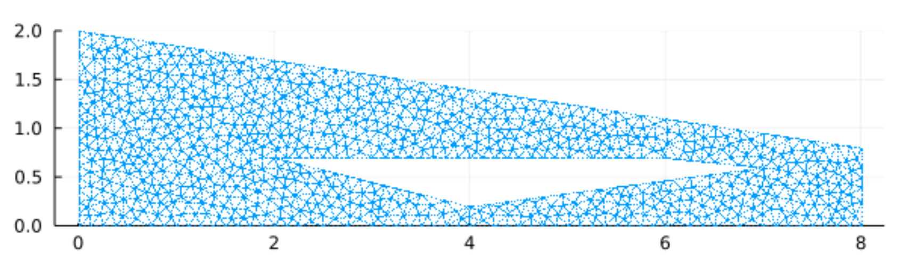
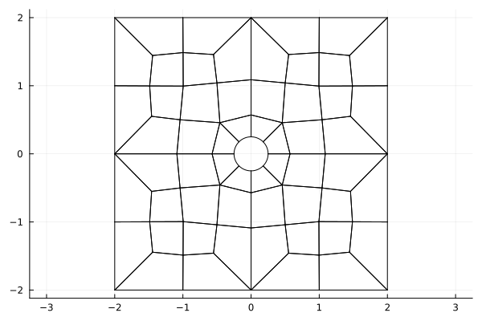

MeshData type
MeshData includes fields such as
xyz::NTuple{Dim, ...}: nodal interpolation points mapped to physical elements. All elements ofxyzare $N_p \times N_{\rm elements}$ matrices, where $N_p$ are the number of nodal points on each element.xyzq::NTuple{Dim, ...}, wJq: volume quadrature points/weights mapped to physical elements. All elements these tuples are $N_q \times N_{\rm elements}$ matrices, where $N_q$ is the number of quadrature points on each element.xyzf::NTuple{Dim, ...}: face quadrature points mapped to physical elements. All elements ofxyzare $N_f \times N_{\rm elements}$ matrices, where $N_f$ is the number of face points on each element.mapP, mapB: indexing arrays for inter-element node connectivity (mapP) and for extracting boundary nodes from the list of face nodesxyzf(mapB).mapPis a matrix of size $N_f \times N_{\rm elements}$, while the length ofmapBis the total number of nodes on the boundary.rstxyzJ::SMatrix{Dim, Dim}: volume geometric terms $G_{ij} = \frac{\partial x_i}{\partial \hat{x}_j}$. Each element ofrstxyzJis a matrix of size $N_p \times N_{\rm elements}$.J, Jf: volume and surface Jacobians evaluated at interpolation points and surface quadrature points, respectively.Jis a matrix of size $N_p \times N_{\rm elements}$, whileJfis a matrix of size $N_f \times N_{\rm elements}$.nxyz::NTuple{Dim, ...}andnxyzJ::NTuple{Dim, ...}: normalized andJfscaled outward normals evaluated at surface quadrature points. Each element ofnxyzJis a matrix of size $N_f \times N_{\rm elements}$.
These are the main quantities used to construct a DG solver. Information specific to the type of mesh used is stored in the md.mesh_type field.
Setting up md::MeshData
The MeshData struct contains data for high order DG methods useful for evaluating DG formulations in a matrix-free fashion.
Generating unstructured meshes
For convenience, simple uniform meshes are included in with StartUpDG.jl via uniform_mesh
using StartUpDG
num_cells_x, num_cells_y, num_cells_z = 4, 2, 8
(VX,), EToV = uniform_mesh(Line(), num_cells_x)
(VX, VY), EToV = uniform_mesh(Tri(), num_cells_x, num_cells_y)
(VX, VY), EToV = uniform_mesh(Quad(), num_cells_x, num_cells_y)
(VX, VY, VZ), EToV = uniform_mesh(Tet(), num_cells_x, num_cells_y, num_cells_z)
(VX, VY, VZ), EToV = uniform_mesh(Pyr(), num_cells_x, num_cells_y, num_cells_z)
(VX, VY, VZ), EToV = uniform_mesh(Wedge(), num_cells_x, num_cells_y, num_cells_z)
(VX, VY, VZ), EToV = uniform_mesh(Hex(), num_cells_x, num_cells_y, num_cells_z)The uniform triangular mesh is constructed by creating a uniform quadrilateral mesh then bisecting each quad into two triangles. Wedge meshes are constructed similarly. Tet meshes are constructed by dividing each hexahedron into 5 tetrahedral elements. Pyramid meshes are constructed by dividing each hexahedron into 6 pyramids.
Initializing high order DG mesh data
Given unstructured mesh information (tuple of vertex coordinates VXYZ and index array EToV) high order DG mesh data can be constructed as follows:
md = MeshData(VXYZ, EToV, rd)Enforcing periodic boundary conditions
Periodic boundary conditions can be enforced via the is_periodic keyword argument
md_periodic = MeshData((VX, VY), EToV, rd; is_periodic=true) # periodic in both x and y coordinates
md_periodic_x = MeshData((VX, VY), EToV, rd; is_periodic=(true, false)) # periodic in x direction, but not yor by calling make_periodic, which returns a new MeshData instance
md = MeshData((VX, VY), EToV, rd)
md_periodic = make_periodic(md) # periodic in both x and y coordinates
md_periodic_x = make_periodic(md, true, false) # periodic in x direction, but not yIn either case, the MeshData indexing arrays fields mapP,mapB, and FToF are modified to account for periodicity.
One can check which dimensions are periodic via the is_periodic field of MeshData. For example, the md_periodic_x example above gives
julia> md_periodic_x.is_periodic
(true, false)Creating curved meshes
It is common to generate curved meshes by first generating a linear mesh, then moving high order nodes on the linear mesh. This can be done by calling MeshData again with new x, y coordinates:
md = MeshData((VX, VY), EToV, rd)
(; x, y ) = md
# <-- code to modify high order nodes (x,y)
md_curved = MeshData(rd, md, x, y)MeshData(rd, md, x, y) and MeshData(rd, md, x, y, z) are implemented for 2D and 3D, though this is not currently implemented in 1D.
More generally, one can create a copy of a MeshData with certain fields modified by using @set or setproperties from Setfield.jl.
Unstructured and pre-defined triangular meshes using Triangulate.jl
StartUpDG.jl also includes additional utilities based on Triangulate.jl for creating and visualizing meshes. Several pre-defined geometries are included in StartUpDG.jl. A few examples are SquareDomain, RectangularDomainWithHole, Scramjet, and CircularDomain. See triangulate_example_meshes.jl for a more complete list and field arguments. These can each be called using triangulate_domain, for example the following code will create a mesh of a scramjet:
meshIO = triangulate_domain(Scramjet())
(VX, VY), EToV = triangulateIO_to_VXYEToV(meshIO)
rd = RefElemData(Tri(), 7)
md = MeshData((VX, VY), EToV, rd)A quick plot of the face nodes via
using Plots
scatter(vec.(md.xyzf)..., msw=0, ms=1, aspect_ratio=:equal, ylims=(0,2), leg=false)shows the following figure 
Unstructured curved quadrilateral and hexahedral meshes using HOHQMesh.jl
StartUpDG.jl also reads in .mesh files generated by HOHQMesh.jl. The following code constructs a MeshData which represents a curved quadrilateral mesh generated by HOHQMesh.jl.
using StartUpDG
rd = RefElemData(Quad(), 4)
hmd = read_HOHQMesh("test/testset_HOHQMesh_meshes/easy_example.mesh")
md = MeshData(hmd, rd)We can visualize the mesh using
using Plots
plot(rd, md) # can also use `plot(MeshPlotter(rd, md))`which yields the following figure:

The boundary faces are also automatically tagged with the labels provided in the HOHQMesh file. Each boundary tag and the faces that lie on it are stored in md.mesh_type.boundary_faces.
Tagging boundary faces and boundary nodes
One can "tag" boundary faces (or boundary nodes) by specifying boolean functions which evaluate to true if a point is on a given boundary segment.
rd = RefElemData(Tri(), N=3)
md = MeshData(uniform_mesh(Tri(), 1)..., rd)
on_bottom_boundary(point, tol=1e-13) = abs(point[2] + 1) < tol # point = (x,y)
on_top_boundary(point, tol=1e-13) = abs(point[2] - 1) < tol
boundary_face_dict = tag_boundary_faces(md, Dict(:bottom => on_bottom_boundary, :top => on_top_boundary))
boundary_node_dict = tag_boundary_nodes(rd, md, Dict(:bottom => on_bottom_boundary, :top => on_top_boundary))You can also specify a list of boundaries using NamedTuples
boundary_face_dict = tag_boundary_faces(md, (; :bottom=>on_bottom_boundary,:top=>on_top_boundary))
boundary_node_dict = tag_boundary_nodes(rd, md, (; :bottom=>on_bottom_boundary,:top=>on_top_boundary))